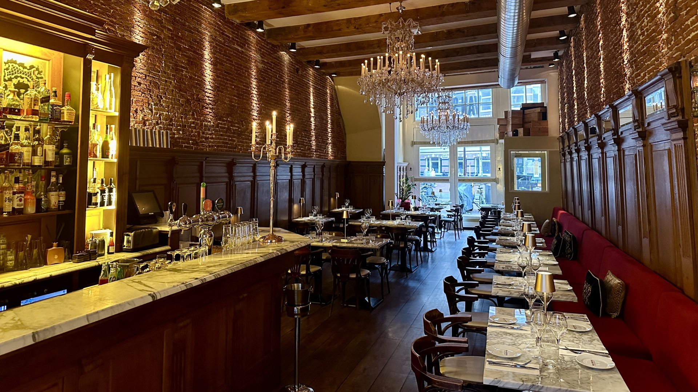
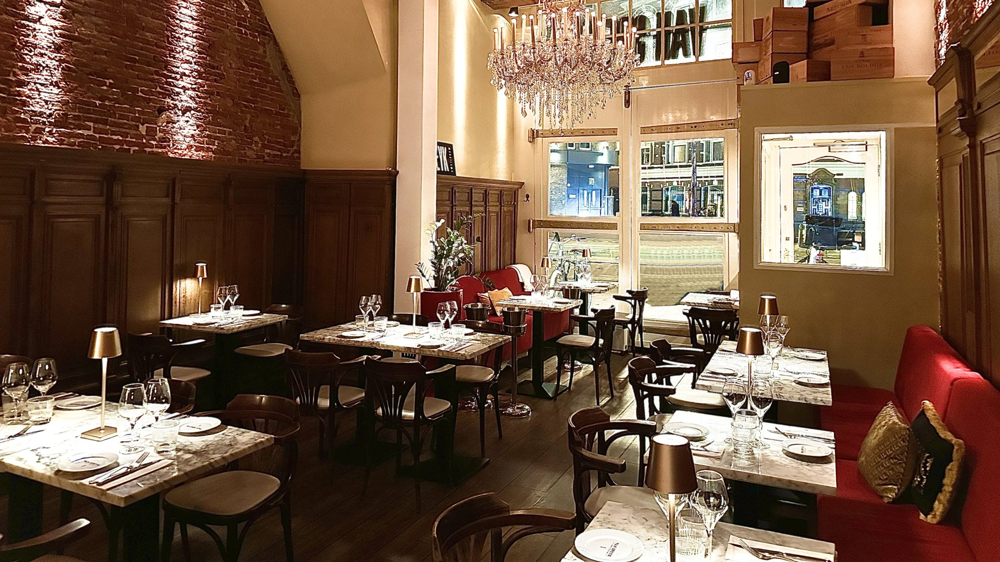
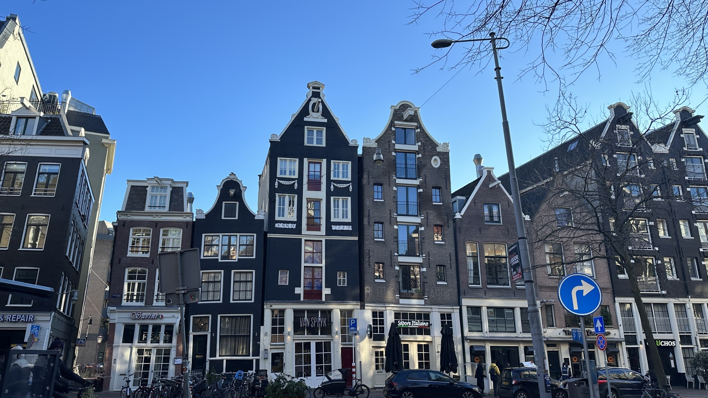
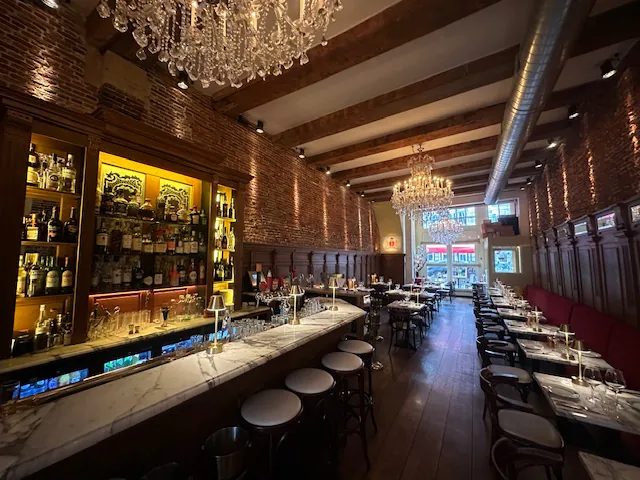
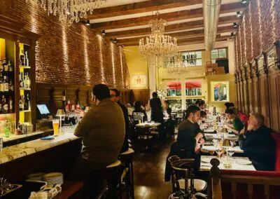

Brasserie d’Amsterdam
Van Speyk
Intiem tafelen in een gerestaureerd pakhuis uit 1659, midden in het centrum aan de Spuistraat. Zeeuwse mosselen en oesters, verse Noordzeevis en Hollandse klassiekers.
Spuistraat 3a, Amsterdam
Een monumentale brasserie met Amsterdamse gastvrijheid
Vier meter hoge plafonds, kristallen kroonluchters, antieke lambrisering en eeuwenoude bouwmuren: Van Speyk zit in een recent gerestaureerd pakhuis uit 1659, met een romantisch interieur.
Geniet van Zeeuwse mosselen en oesters, verse vis uit de Noordzee en klassiekers als confit de canard met zuurkool, draadjesvlees met andijviestamppot, rookworst en piccalilly, een mooi ribstuk met pepersaus, of een lamskroon van Texels lam met krokant gebakken friet en huisgemaakte mayonaise.
Daarbij een goed glas wijn van de uitgebreide wijnkaart, of een ijskoud lokaal biertje van de tap.
Wijn & bier
Een uitgebreide wijnkaart, van huiswijn per glas tot grand cru classé. Twee prijzen? Dan is het per glas en per fles.
- 2022
Chardonnay
Dom Doriac, Languedoc
7,75 / 37,50 - 2022
Sauvignon Blanc
Domaine Octavie, Touraine, Loire
7,75 / 37,50 - 2023
Hoeve Neekum
Auxerrois, Limburg
8,50 / 40 - 2022
Pinot Grigio
Alto Adige, Südtirol
40 - 2022
Grüner Veltliner
Kremstal Reserve, Oostenrijk
40 - 2023
Chardonnay
Kleine Zalze, Kaaimansgat, Zuid-Afrika
45 - 2019
Pinot Blanc Auxerrois
Bernard et Robert Schoffit, Elzas
45 - 2021
Pouilly-Fumé
Domaine Roc de l’Abbaye, Loire
55 - 2022
Apostelhoeve Cuvée XII
Müller-Thurgau, Auxerrois, Pinot Gris, Nederland
60 - 2022
Chablis 1er Cru
Domaine Hamelin, Bourgogne
60 - 2011
Familie Hugel
Grossi Laüe, Pinot Gris
65 - 2022
Sancerre
Domaine Fouassier, Loire
65 - 2022
Rully
Jean-Baptiste Ponsot, En Bas de Vauvry, Bourgogne
75 - 2022
Meursault
Alain Patriarche, Les Grands Charrons, Bourgogne
110
- 2021
Cabernet Sauvignon, Merlot
Codex Reserve, Languedoc
7,75 / 37,50 - 2022
Malbec
Mendoza Valley, Argentinië
7,75 / 37,50 - 2023
Barbera d’Asti
Ca Nova, Piemonte, Italië
40 - 2021
Cabernet Sauvignon
Millantu, Villa del Maipo, Chili
45 - 2020
Shiraz
De Grendel, Kaapstad, Zuid-Afrika
45 - 2022
Châteauneuf-du-Pape
Domaine Usseglio, Rhône
65 - 2017
Haut-Médoc
Château Chasse-Spleen, L’Héritage de Chasse-Spleen, Bordeaux
65 - 2019
Amarone della Valpolicella
Biscardo, Veneto, Italië
75 - 2019
Fixin
Pierre Bourée, La Croix Blanche, Bourgogne
80 - 2016
Pomerol
Château de Sales, Bordeaux
85 - 2018
Gevrey-Chambertin
Pierre Bourée, La Croix Blanche, Bourgogne
99 - 2012
Château Léoville Poyferré
Saint-Julien, 2e Grand Cru Classé du Médoc en 1855, Bordeaux
160 - 2010
Pessac-Léognan
Château Malartic-Lagravière, Grand Cru Classé, Bordeaux
180 - 2009
Pauillac
Château Grand-Puy-Lacoste, 5e Cru Classé, Bordeaux
200
- 2021
Côtes de Provence
Château Paquette
8 / 40 - 2021
Provence
AIX
55 - 2024
Whispering Angel
Château d’Esclans
75
Crémant de Bourgogne
Per glas of per fles
9 / 45Veuve Clicquot Yellow Label Brut
Champagne
95Veuve Clicquot Rosé Brut
Champagne
110Ruinart Brut
Champagne
120
- Heineken Pilsener
- Texelse Skuumkoppe
- Amstel Pils
- Brand IPA
Ijskoud van de tap.
Groepen
Ook met een groter gezelschap bent u van harte welkom: Van Speyk biedt plaats aan maximaal 70 gasten. Voor groepen vanaf 10 personen serveren wij een driegangen groepsmenu, met optioneel een drankenarrangement.
Aanpassingen in het menu zijn uiteraard bespreekbaar. À la carte dineren kan ook met een groep, maar dan vragen wij u de bestelling vooraf door te geven. We stellen het op prijs als u uw keuzes van tevoren aan ons doorgeeft.
49,50driegangenmenu per persoon
22,00drankenarrangement per persoon
9,00bitterballengarnituur bij aankomst, per persoon
Impressie
Een recent gerestaureerd pakhuis uit 1659: hoge plafonds, kroonluchters, rode banken en marmeren tafels.




Reserveren
Reserveren kan per e-mail, maar u kunt ook gewoon even bellen.
Adres & openingstijden
Brasserie Van SpeykSpuistraat 3a
1012 SP Amsterdam
Het restaurant heeft ook een ingang aan de Nieuwezijds Voorburgwal 16, 1012 RZ Amsterdam.
Routebeschrijving- Maandag
- 16:30 – 23:00
- Dinsdag
- 16:30 – 23:00
- Woensdag
- 16:30 – 23:00
- Donderdag
- 16:30 – 23:00
- Vrijdag
- 16:30 – 23:00
- Zaterdag
- 16:30 – 23:00
- Zondag
- gesloten
De keuken is open tot 22:00 uur.